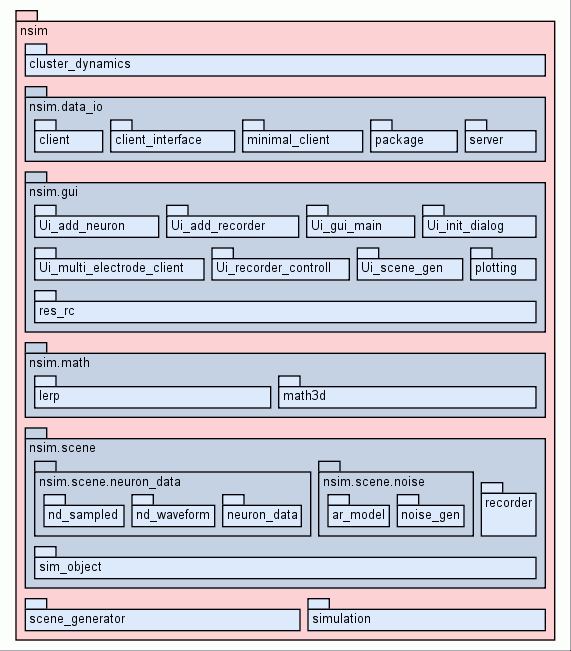
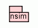

| Trees | Indices | Help |
|
|---|
|
|
Neural Simulation
A package for simulation of extracellular recordings.
|  |
| Package Tree for nsim |
| Class Hierarchy for |
|  |
| Import Graph |
Version: 0.1.54
Author: Philipp Meier
Contact: pmeier82@googlemail.com
Copyright: (c) 2010 Philipp Meier
License: EUPL v1.1, http://ec.europa.eu/idabc/eupl
|
|||
| |||
|
|||
__revision__ = |
|||
__package__ = Nonehash(x) |
|||
| Trees | Indices | Help |
|
|---|
| Generated by Epydoc 3.0.1 on Thu Sep 23 14:59:31 2010 | http://epydoc.sourceforge.net |